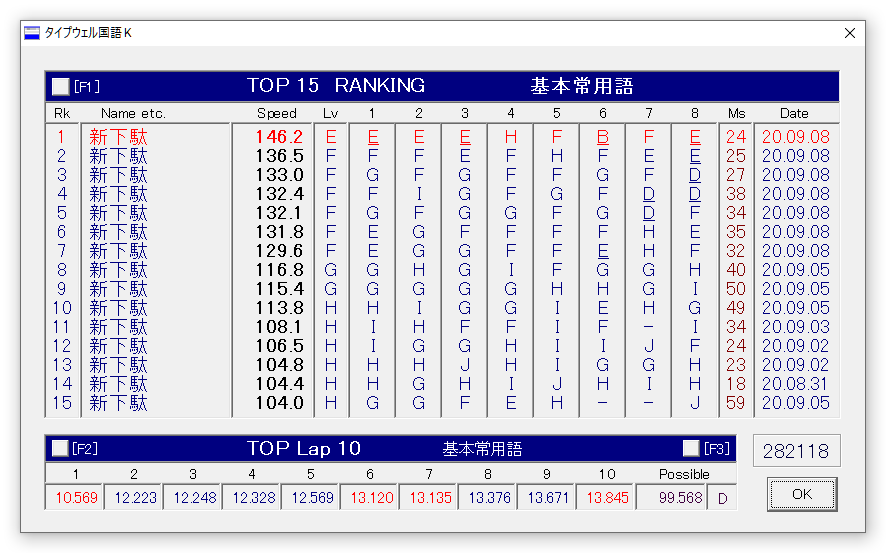
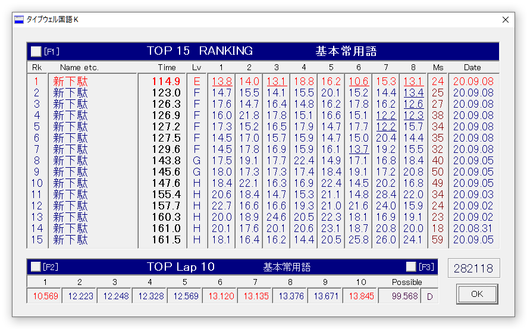
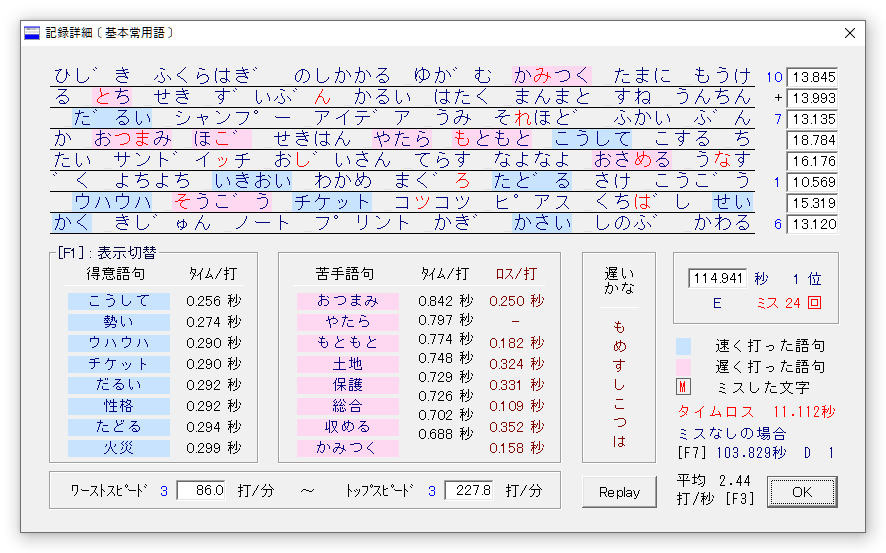

新下駄配列を仕事でも常用するようになってから、かなり速度の伸びが加速した感があって嬉しい。
（ちなみにFに初到達したのは一昨日だけど、ランキング記録に載っていないのは一昨日だけ別パソコンだったせい。台風10号のさなかだったので普段のデスクトップじゃなくてノーパソだった。）
正直もう少し練習したらもっとパパパッと打てるようになるんだろうなーっていうストロークは多々あるけれど、改めて普段使いの大切さを実感。
ここ数日で非常に定着した感があるのはやっぱり拗音で、「じゃじゅじょちゃちゅちょ」あたりが以前に比べてサクサクと打てるようになった。
また最近は打鍵速度が上がったので、マイタイピングで夏目漱石の『こころ』を打ってみたりとか、長文にも挑戦できるくらいのポテンシャルが出てきたので、指数関数的に打鍵の安定感が増している感がある。
あんまりダラダラと書くと駄文にはなりがちだけど、ここにこうやって書く文章も、打鍵スピードの向上に比例して多くなっているので、やっぱり打った分だけ上達しているんだろうなと思う。
ちなみにFからEに上がった瞬間から、なんとなく次のレベルに上がるコツとして、速度に乗る感じみたいなのが必要な気がしてきた。
新下駄配列は左右同時打鍵が存在しているせいか、自分の中で一定のリズムを刻んで左右打鍵をシンクロさせているような感じがあって、放って置くと同時打鍵が一定のリズムで定着しがちな気がする。それをできる限り毎回もっと速くと意識することで、意識的に自分のリズムが打破されて速くできるような気がした。
両手の動きを同期して打鍵するというのは、多分思ったよりもコストのかかる動作で、親指シフトの同手同時打鍵ほどではないにしても、中指同時シフト (薬指同時シフト) 系配列に特有の足かせなんだろうなと思う。
でも自分は親指シフト系の「指がしゃべる」と言われる所以の「1モーラ1アクション」の美学と快適さがとても好きなので、いまさら前置シフト系にするつもりはあんまりない。
そう考えると、同時打鍵は「指がしゃべる」ためのトレードオフなんだと改めて思う。
同時打鍵が足を引っ張る感じは、文章量アップによる慣れと、意識的な左右シンクロ速度アップでなんとなく克服できる感じはあって、多分それが最近の速度向上に現れていると思うので、ひょっとしたらまだまだ短期間で速度向上する余地はあるんじゃないかと思う。
ちなみにちょっと話は変わって、ランキングにSpeedとして表記される打/秒 (KPM)という単位は、配列を行き来する自分としてはなかなかややこしい。
自分のローマ字タイピングは平均的には400打/秒 (SAランク)、今回のかな入力が150打/秒 (Eランク) で、これを同じ土俵で比較するには 文字/秒 にしないといけない。
ローマ字はざっと2で割っていいとして、かな入力は濁点があるので微妙に悩む。とりあえずローマ字2打、かな入力1打としたときに、先の数値でローマ字200文字/秒、かな打ち150文字/秒。そうだとすると、速度的には現時点で既にローマ字入力に迫ってきているような気がして、俄然やる気が出る。
でもランク表記的には前者がSAで、後者がEで、なんだかなという感じ。計算間違ってるのかな。
今度ローマ字入力とかな入力の速度を同列で簡単に比較できる方法探してみよう。
……と、すぐ思いついたけど、ローマ字入力版を打ってみればいいんだな。そしたらスコアも分かりやすくて良さそう。